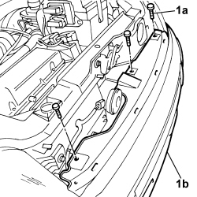
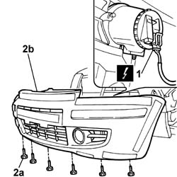
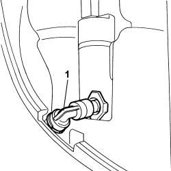
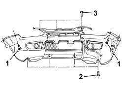
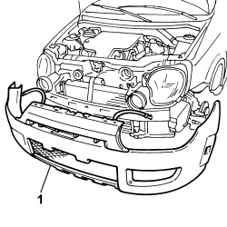
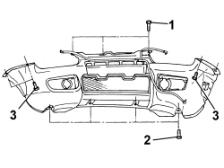

7210E10 R.R. FRONT BUMPER
- Path
- Procedures > 72 PANELS AND FRAME > 7210 REMOVING REFITTING > 7210E EXTERNAL PARTS > 7210E10 R.R. FRONT BUMPER
- Kind
- repair procedure (removal / refitting; the operation number is the code)
- Applies to
- all engines; all production periods
- Interactive page
- https://sloeber94.github.io/elrnDB-fPnd/en/#/2753353
Applies to: all engines; all production periods
 Removing
Removing
 Refitting
Refitting
Applies to: all engines; all production periods

Applies to: engines: 1.3 JTD 16v; all production periods; only with equipment: SUV
Removing
RefittingPosition the vehicle on a lift.
Disconnect the negative battery terminal.
Op. 7055A65 FRONT LIGHT CLUSTER MOULDING.FRAME (ONE) LH OR RH R R
[Both]
Op. 7055A42 FRONT GRILLE - R+R
Op. 4450B12 FRONT OR REAR WHEELS (TWO) - R+R
Op. 7055B65 ENGINGE BAY DUSTGUARD PROTECTION IN LEFT FRONT WHEEL ARCH R R
Op. 7055B66 ENGINE BAY DUSTGUARD PROTECTION IN RIGHT FRONT WHEEL ARCH R R
Op. 7055A24 MOULDING ON FRONT WHEEL ARCH ONE LH OR RH R R
[Both]
Op. 5550C30 L/H OR R/H FRONT TURN SIGNAL (ONE) - R+R
[Both]
Applies to: engines: 1.3 JTD 16v; all production periods; only with equipment: SUV
1. Working from the right turn indicator seat, undo the clip and disconnect the headlamp washer pipe.
Collect the coolant in a suitable container.

Applies to: engines: 1.3 JTD 16v; all production periods; only with equipment: SUV
1. Working in the wheel arch compartments, unscrew the side bolts.
2. Undo the lower fixing bolts.
3. Undo the upper retaining bolts.

Applies to: engines: 1.3 JTD 16v; all production periods; only with equipment: SUV
1. Remove the bumper complete with the headlamp washer pipes.

Applies to: engines: 1.3 JTD 16v; all production periods; only with equipment: SUV
Refitting
Removing1. Position the bumper in its seat.

Applies to: engines: 1.3 JTD 16v; all production periods; only with equipment: SUV
1. Tighten the upper fixing bolts.
2. Tighten the lower fixing bolts.
3. Working from the wheel arch compartments, tighten the side bolts.

Applies to: engines: 1.3 JTD 16v; all production periods; only with equipment: SUV
1. Working from the right direction indicator seat, connect the headlamp washer pipe and secure with the clip.

Applies to: engines: 1.3 JTD 16v; all production periods; only with equipment: SUV
Op. 5550C30 L/H OR R/H FRONT TURN SIGNAL (ONE) - R+R
[Both]
Op. 7055A24 MOULDING ON FRONT WHEEL ARCH ONE LH OR RH R R
[Both]
Op. 7055B66 ENGINE BAY DUSTGUARD PROTECTION IN RIGHT FRONT WHEEL ARCH R R
Op. 7055B65 ENGINGE BAY DUSTGUARD PROTECTION IN LEFT FRONT WHEEL ARCH R R
Op. 4450B12 FRONT OR REAR WHEELS (TWO) - R+R
Op. 7055A42 FRONT GRILLE - R+R
Op. 7055A65 FRONT LIGHT CLUSTER MOULDING.FRAME (ONE) LH OR RH R R
[Both]
Connect the negative battery terminal.
Remove the vehicle from the lift.
Topics linked from this page (7)
- 4450B12 front or rear wheels (two) - r+r
- 5550C30 L/H OR R/H FRONT TURN SIGNAL (ONE) - R+R
- 7055A24 MOULDING ON FRONT WHEEL ARCH ONE LH OR RH R R
- 7055A42 FRONT GRILLE - R+R
- 7055A65 FRONT LIGHT CLUSTER MOULDING.FRAME (ONE) LH OR RH R R
- 7055B65 ENGINGE BAY DUSTGUARD PROTECTION IN LEFT FRONT WHEEL ARCH R R
- 7055B66 ENGINE COMPARTMENT DUST SHIELD PROTECTION IN RIGHT FRONT WHEEL ARCH - R.R.
Topics that link to this page (11)
- 5040A40 air conditioner condenser - r+r
- 5040A44 air conditioner dehydrating filter/accumulator - r+r
- 5040A50 pipe from compressor to air conditioner condenser - r+r
- 5040A58 pipe from expansion valve to compressor - r+r
- 5040A60 pipe from condenser to evaporator (expansion pipe) - r+r
- 5040B20 AIR CONDITIONING SYSTEM' PRESSURE LINEAR TRANSDUCER - R.R.
- 5050D13 HEADLAMP WASHER SYSTEM TYPES AND FITTINGS - R R
- 5540B14 front headlamp unit (one) lh or rh - r r
- 5540B87 RIGHT HEADLAMP SUPPORT - R.R. WITH HEADLAMP REMOVED
- 7210A02 FRONT END ASSEMBLY RR
- 7210A18 FRONT CROSSMEMBER